Image credits
Fruit and vegetable photos come from Wikimedia Commons; all other product images were drawn for FreshTrack. Each was cut out from its background and resized for the app; modified versions keep the original licence. Back to FreshTrack
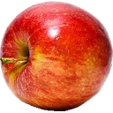 | Red Apple.jpg Abhijit Tembhekar from Mumbai, India · CC BY 2.0 |
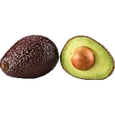 | Avocado Hass - single and halved.jpg Ivar Leidus · CC BY-SA 4.0 |
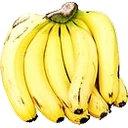 | Cavendish bananas DS.jpg Augustus Binu : flickr · CC BY-SA 3.0 |
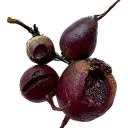 | 20211014-betteraves-rapides.jpg MHM55 · CC BY-SA 4.0 |
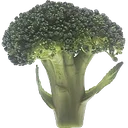 | Good broccoli Deal!.jpg Renee Comet (Photographer) · Public domain |
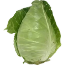 | Couve-coração-de-boi.jpg Unknown authorUnknown author · CC BY 4.0 |
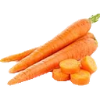 | Carrot-fb.jpg Collegestudent33 · CC BY-SA 4.0 |
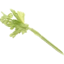 | Celery (1).jpg Renee Comet (Photographer) · Public domain |
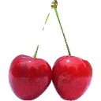 | Cherry Stella444.jpg Benjamint444, edited by Fir0002 · CC BY-SA 3.0 |
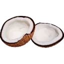 | Coconut on white background.jpg Filo gèn' · CC BY-SA 4.0 |
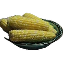 | Corn on the cob (5178296206).jpg Geoff Peters from Vancouver, BC, Canada · CC BY 2.0 |
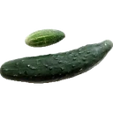 | Ogórki...jpg Mariuszjbie · CC BY-SA 3.0 |
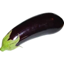 | Aubergine.jpg Horst Frank · CC BY-SA 3.0 |
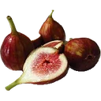 | Fig fruit. Ficus carica. Purple fig variety (52335020972).jpg TopTropicals.com · CC BY-SA 2.0 |
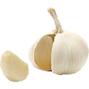 | Opened garlic bulb with garlic clove.jpg Dubravko Sorić SoraZG on Flickr · CC BY 2.0 |
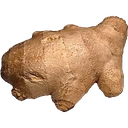 | Ginger 2.jpg Tiia Monto · CC BY-SA 4.0 |
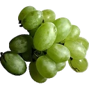 | Green grape fruit.jpg Paolo Neo · Public domain |
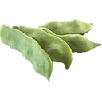 | Beans Phaseolus vulgaris Gartenbohne.jpg bluecherry.at · CC BY-SA 3.0 |
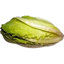 | Cosmopolitan salad.jpg Tiia Monto · CC BY-SA 4.0 |
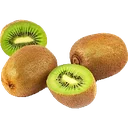 | Kiwi (Actinidia chinensis) 1 Luc Viatour.jpg Luc Viatour · CC BY-SA 2.5 |
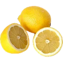 | Lemon.jpg André Karwath aka Aka · CC BY-SA 2.5 |
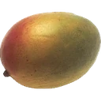 | Mango (1).jpg Renee Comet (Photographer) · Public domain |
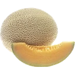 | Cantaloupe.jpg Renee Comet (Photographer) · Public domain |
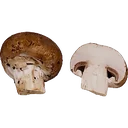 | Baby-Port-Mushrooms.jpg Evan-Amos · Public domain |
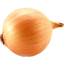 | Cebula - onion.jpg Alina Zienowicz (Ala z), e-mail · CC BY-SA 3.0 |
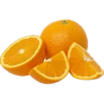 | Orange-Fruit-Pieces.jpg Evan-Amos · CC BY-SA 3.0 |
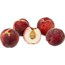 | White-Peaches-Bunch.jpg Evan-Amos · CC0 |
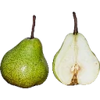 | Pear DS.jpg Augustus Binu : flickr · CC BY-SA 3.0 |
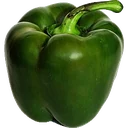 | Capsicum3.JPG Ilanga · CC BY-SA 3.0 |
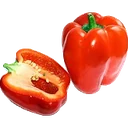 | Red bell pepper.jpg AntanO · CC BY-SA 4.0 |
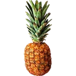 | Ananas~May 2008-1.jpg Alvesgaspar · CC BY-SA 3.0 |
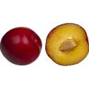 | Red-Plums.jpg Evan-Amos · CC0 |
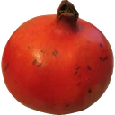 | Punica granatum 3.jpg Unknown · CC BY-SA 3.0 |
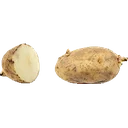 | Russet potato cultivar with sprouts.jpg ZooFari · Public domain |
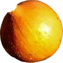 | Harvest September 2014 Pumpkin - Pompoen - Cucurbita pepo 'Orange' (Orange Ball, Mock Orange) cropped.jpg dirrksv from Netherlands, cropped by RoRo · CC BY 2.0 |
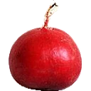 | One radish - Flickr - Rosmarie Voegtli.jpg Rosmarie Voegtli · CC BY 2.0 |
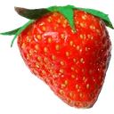 | FraiseFruitPhoto.jpg FoeNyx, France · CC BY-SA 3.0 |
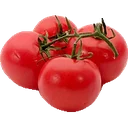 | Tomato je.jpg Softeis · CC BY-SA 3.0 |
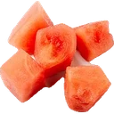 | Food Portions (Team Nutrition) (20210902-FNS-UNC-0039).jpg USDAgov · Public domain |
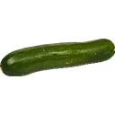 | Zucchini-Whole.jpg Evan-Amos · Public domain |


.jpg){kind=link}


.jpg){kind=link}


.jpg){kind=link}


_1_Luc_Viatour.jpg){kind=link}

.jpg){kind=link}


_cropped.jpg){kind=link}


_(20210902-FNS-UNC-0039).jpg){kind=link}